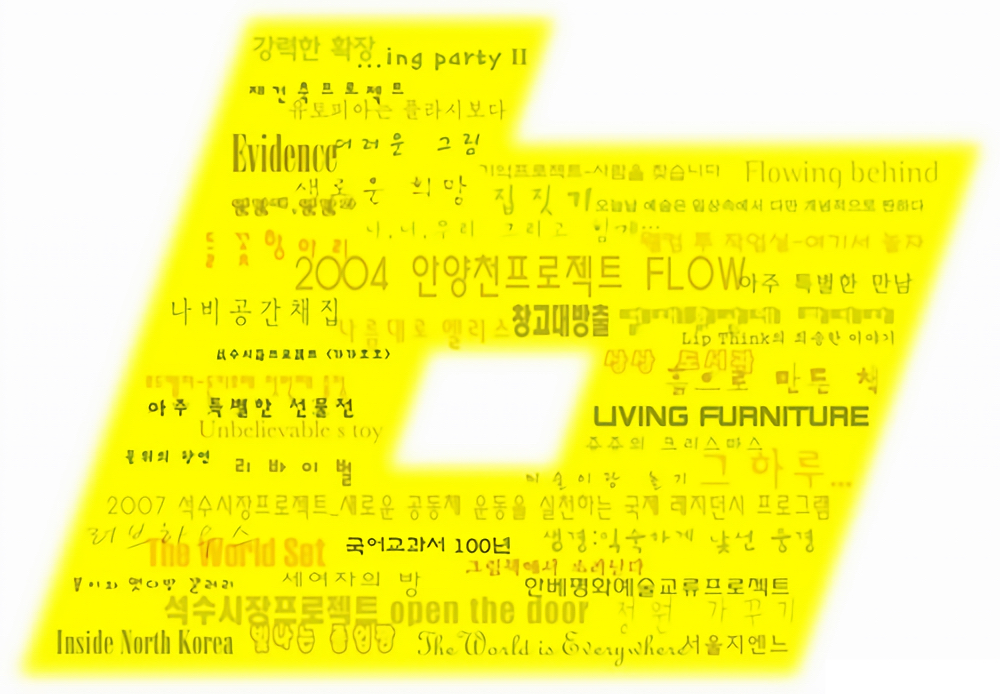
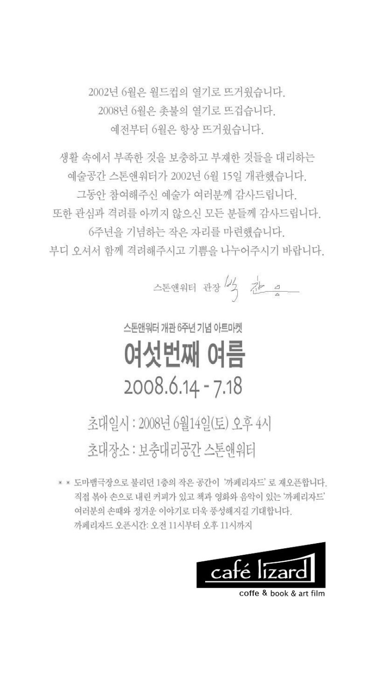

여섯번째 여름
스톤앤워터 개관 6주년 기념 아트마켓
2008_0614 ▶ 2008_0718 / 일요일 휴관

초대일시 / 2008_0614_토요일_04:00pm
난상토론 「석수시장과 예술시장」 2008_0705_토요일_04:00pm_스톤앤워터 2층
참여작가
강화수_강효명_고수정_권승찬_권자연_권재홍
권진수_금영보_김기현A_김기현B_김다해_김단비
김명진_김석용_김선애_김설아_김순임_김용익
김월식_김은자_김창겸_김홍희_Jinius_류충렬
박진경A_박진경B_백기영_사성비_성유진_신정필
신지선_안순영_양상용_오용길_윤재일_이기숙
이부록_이상홍_이수정_이억배_이인경_이재헌
이정란_이칠재_이현열_이호석_이희현_임상빈
임정선_임흥순_장준영_장파_장형순_정상경_정유정
주운항_진시우_차기율_채진숙_최윤경_최혜림
최혜정_타마라구베르낫_표형렬_하석원_황소영
후원 / 한국문화예술위원회
관람시간 / 10:30am~06:30pm / 일요일 휴관
보충대리공간 스톤앤워터
SUPPLEMENT SPACE STONE & WATER
경기도 안양시 만안구 석수2동 286-15번지 B1 스톤앤워터, 1층 카페리자드
Tel. +82.(0)31.472.2886
www.stonenwater.org
.jpg)
시간은 우리가 생각하는 것보다 빠르게 지나간다. 어느 순간 지나간 시간을 뒤돌아 보았을 때 이미 꽤 많은 곳까지 와있는 것을 발견하고 놀라곤 한다. 1년, 2년, 3년, 그리고 6년... 2002년 안양의 석수동에서 시작된 스톤앤워터는 어느덧 '6'이라는 숫자를 향해가고 있다. 여기서 숫자 6은 스톤앤워터를 설명하는 데 있어 특별한 무엇이 된다. 하나의 완성을 상징하는 숫자 10을 반으로 나누었을 때 6은 5라는 중간 지점과 연결되면서 10으로 나아가는 시작이기도 한데 이는 스톤앤워터가 놓여 있는 여기, 즉 지금까지의 성과들을 정리하고 새로운 시작으로 한걸음 나가야할 현재를 설명한다고 할 수 있다.


이번 전시에서는 스톤앤워터의 '여섯번째 여름'을 다른 어느 때 보다 의미있는 순간으로 만들기 위해 2002년부터 현재까지 이곳에서 활동했던 기획자들과 작가들을 다시 찾아나서는 중요한 시도를 하려고 한다. 그리고 그들의 현재 진행중인 또는 과거의 작품들이 유기적으로 결합하여 전시되는 과정에서 스톤앤워터만의 아카이브를 만들려는 것이 궁극적인 목적이다. 무엇보다도 이번 전시는 석수시장이라는 공간과 함께했던 스톤앤워터가 제안하는 아트마켓의 형태를 띠며 이후 지속적인 아트마켓의 시작이 될 것이라고 기대한다.
■ 스톤앤워터

스톤앤워터 6주년 기념전 <여섯번째 여름>의 참여작가를 모집합니다.
스톤앤워터 개관 6주년 기념전 <여섯번째 여름>에 참여해주실 작가를 모집합니다.
이번 전시를 계기로 2003년 <새로운 희망>전의 참여 작가님들을 만나뵙고 싶습니다.
궁금하신 사항이 있으시면 연락주세요(스톤앤워터 이윤진.031-472-2886 / 011-275-1928)
* 전시개요
전시명 : 여섯번째 여름
전시기간 : 2008년 6월 14일(토)-7월 18일(금)
전시장소 : 스톤앤워터 전시장
참여작가 : 스톤앤워터 개인전 및 기획전 참여작가
주 최 : 스톤앤워터 전시기획팀(총괄기획_박찬응, 진행_이윤진)
후 원 : 한국문화예술위원회
* 기획의도
2002년 안양의 석수동에서 시작된 스톤앤워터는 어느덧 ‘6’이라는 숫자를 향해가고 있습니다. 여기서 숫자 6은
스톤앤워터를 설명하는 데 있어 특별한 무엇이 됩니다. 하나의 완성을 상징하는 숫자 10을 반으로 나누었을 때
6은 5라는 중간 지점과 연결되면서 10으로 나아가는 시작이기도 한데 이는 스톤앤워터가 놓여 있는 여기, 즉 지금
까지의 성과들을 정리하고 새로운 시작으로 한걸음 나가야할 현재를 설명한다고 할 수 있습니다.
이번 전시는 스톤앤워터의 ‘여섯번째 여름’을 다른 어느 때 보다 의미있는 순간으로 만들기 위해 2002년부터
2007년까지 이곳에서 활동했던 기획자들과 작가들을 다시 찾아나서는 중요한 시도를 하려고 합니다.
스톤앤워터에서 개인전 및 기획전을 가졌던 작가들과 함께 주요한 전시 및 프로젝트를 진행했던 기획자가
제안하는 작가들이 이번 전시에 참여할 것이고 그들의 현재 진행중인 작품들이 유기적으로 결합하여 전시되는
과정에서 스톤앤워터의 정체성에 대해 말할 수 있는 근거들이 형성되기를 기대합니다.
무엇보다도 <여섯번째 여름>은 2002년 개관전 <리빙 퍼니처>전의 취지였던 ‘생활 속의 예술’을 지향하는 한편
중저가 아트마켓의 형태를 띠며 이후 스톤앤워터만의 특성화된 아트마켓이 지속적으로 형성되는데 있어 그 방향을
결정하는 계기가 될 것입니다.
* 전시구성 및 기본방향, 세부일정은 첨부해드린 [전시기획서]를 참고해 주시고
작가 개별자료를 보내실때는 [출품능낙서 및 작가 개별자료] 문서를 다운받아 쓰시면 됩니다.
* 문의_ 스톤앤워터 큐레이터 이윤진
T. 031-472-2886 H. 011-275-1928 F. 031-473-1529
(430-807) 경기도 안양시 만안구 석수2동 286-15번지
www. stonenwater.org E-mail : stonenwater@hanmail.net